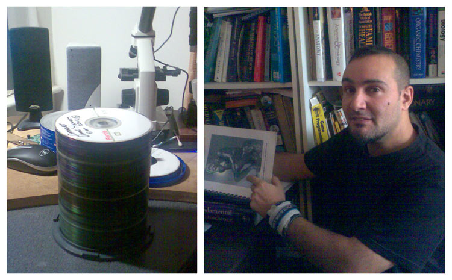

STORY BEHIND THIS PROJECT
ACADEMIC SUPPORT AND RESEARCH TOOLS
At in informal social gathering in 2003 I met Wajid Zia who was then a psychologist, and is now a Clinical Psychologist and my employer. He encouraged me to write papers on the brain dipole theories I was proposing. I was provided academic support, use of uni facilities, journal access, taught research methods etc. I took on the task of teaching myself the necessary neuroscience while at the same time putting a load of it through the dipole model, seeking to understand the brains physics and what caused lateral differences.
For the incredible amount of data required for review of the entire brain, I built a research system based on the cortex in the similiar way David Chalmers talks of how computing devices should be an extention or improvement of ones mind. This requires one computer each for the right and left hemispheres. One for visual thinking, sifting for multipole related patterns through neurological and physics imagery. The other for language thinking, where I created databases of reference checked information. The two were networked and each with its own screen and a “corpus callosum style switch” to throw the left or right computer onto another main middle screen. (see photo below) The idea is that I knew I tended to naturally utilize the creative right side too much, so I needed to balance it by switching my field of vision to the right side, when looking at referenced information. (Since building this system and researching this way, i have found out that the right hemisphere is mainly visual and the left mainly language based, and that looking right or left activates one side or the other.) By having a separate computer for referenced data, and one for visuals, it is easier to keep the language/spatial ratio more even than it might be. For visuospatial data I redesigned the visual environment of a 3d desktop shell, which helped greatly with searching through many visual images. It is possible to have hundreds open at one time within the sphere.

LEFT : The “Lateral Brain extender” two networked computers with their own screen and a switch to decide whether left or right computer gets to occupy my focus (the middle monitor). RIGHT : Utilizing a 3d desktop was invaluable for keeping large amounts of neuroscience related imagery in current mind.
If you are interested in this subject, It is highly technical at this stage, having just redone a lot of stuff. I made a video and a relatively easier to read summary as well as a tutorial on dipoles. If there is any questions contact me. Websites like this are fiddly to update so progress updates of the theory are posted every month or so at a blog.
Felix Lanzalaco 31/10//2009

LEFT : The dipole neurology project backups. RIGHT : That’s me with draft 2.
BACK TO INTRODUCTION PAGE |